void_nemo void_nemoは、4人がインターネットを放浪しながら物を作って放っていく団体です。
void_nemo void_nemoは、4人がインターネットを放浪しながら物を作って放っていく団体です。
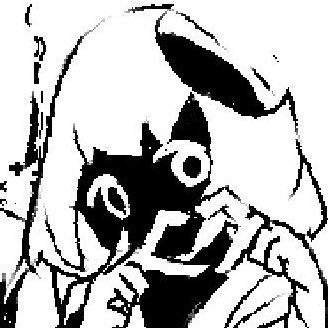
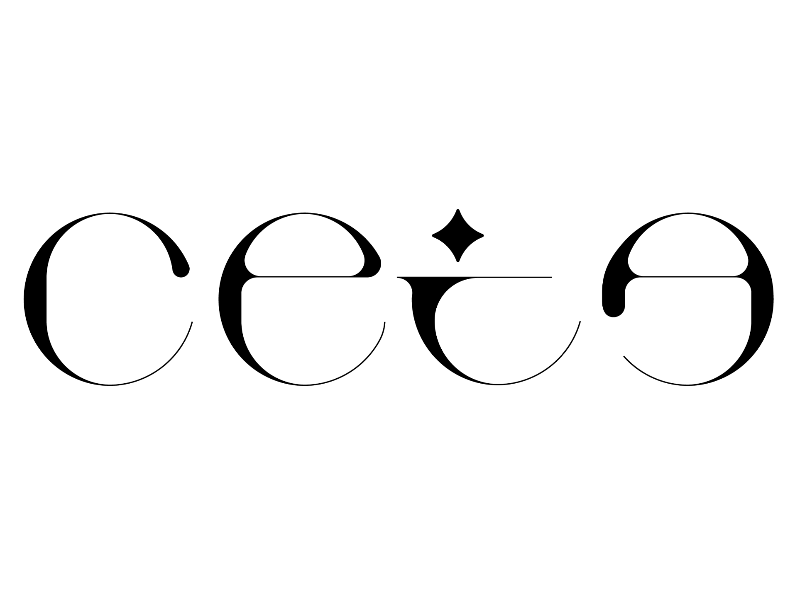
ceta
イロワケイルカ。void_nemo代表。サイトとか人工言語とか、何でもしている。
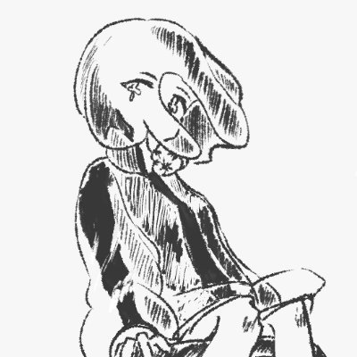
chep
クラゲ。お絵かきをしている。VRCで音楽を聞きに行くこともある。
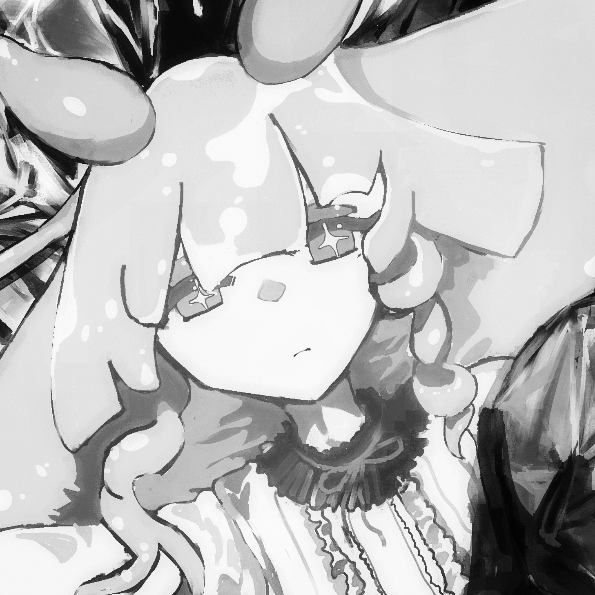
μ
ウミウシ。ロゴデザインとかネタツイをしている。音楽を作るときもある。
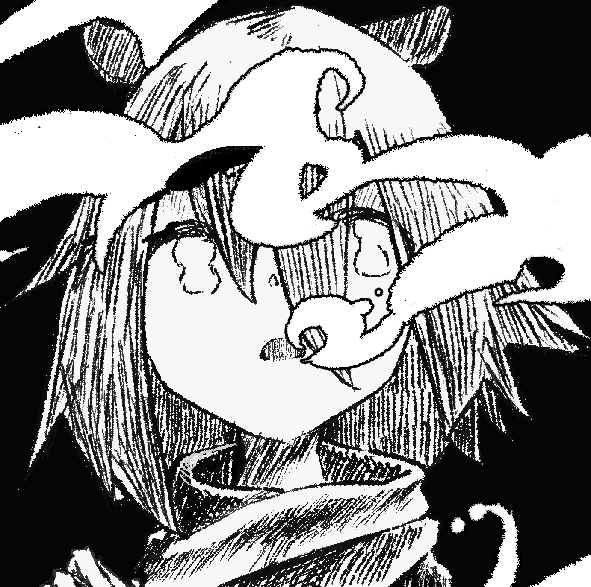
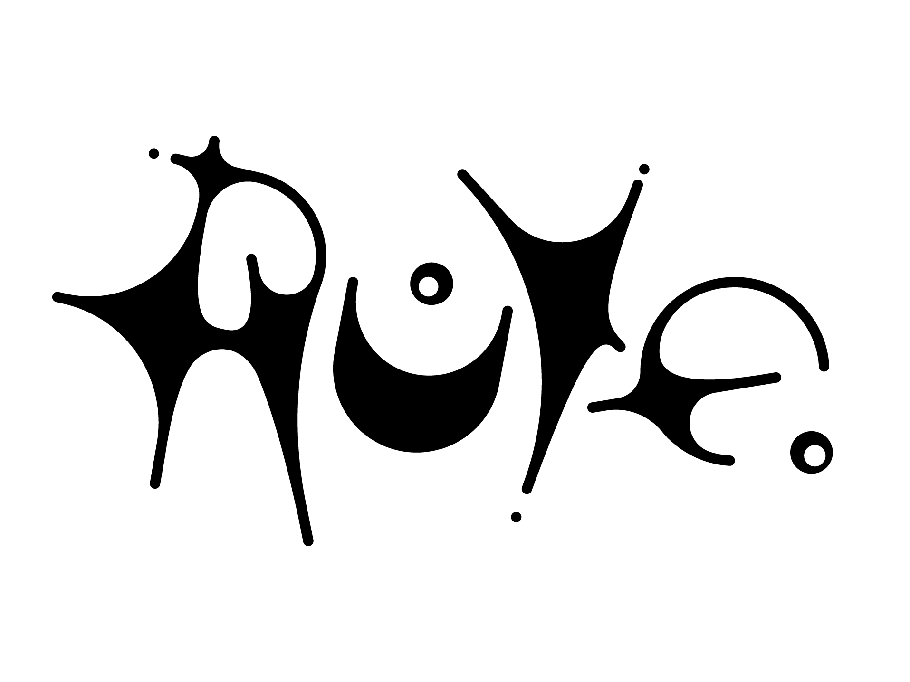
ruye
メンダコ。特になにもしていないが、かわいい。work
ボイドネモ架空世界研究所（VN架研）

架空世界、人工言語関連の活動をしています。
vn-kaken.jp
架空世界
惑星"白露": 地学的な方向性で制作している架空惑星。p5.jsや3DCGでビジュアル制作をしている。人工言語、架空文字
地鳴き語: 鳥類の声帯を使った言語創作。miwenu語: 思考用言語。動詞を名詞とし、すべて状態として扱う。
回遊文字: 単語の標識が接辞や助詞等ではなく動きで表される映像文字。
フォント
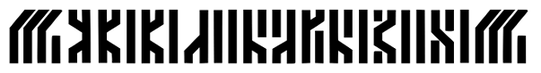 密体: 文字の形状を圧縮して長方形にしたフォント。英語、ロシア語に対応している。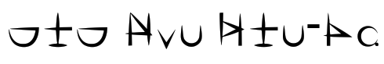 カムツ文字フォント: 巡宙艦ボンタ氏の「高い城のアムフォ」に登場するカムツ言葉の楔形フォント。（サイトはPomo Rossoさん）
VRC

モデリングをしたり、音楽を聞いたりしています。
アバター

ceta
軽量さとテスト用の汎用ローポリモデル

chep
マテリアル実験やファッションのためのハイポリモデル
ワールド

VSYNC
IBM風のモニタが並んだ空間